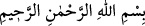
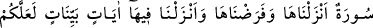
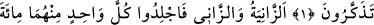
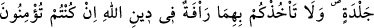
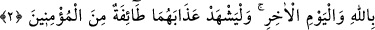
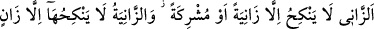
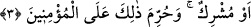
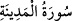
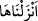

ZİNÂ EDEN
KADIN VE ERKEĞİN
CEZÂSI
Rahmân ve Rahîm olan Allah’ın adıyla.
1. (Bu) Bizim inzâl ettiğimiz ve (hükümlerini üzerinize) farz kıldığımız bir
sûredir. Belki düşünüp öğüt alırsınız diye onda açık seçik âyetler indirdik.
2. Zinâ eden kadın ve zinâ eden erkekten her birine yüz sopa vurun; Allah’a ve
âhiret gününe inanıyorsanız, Allah’ın dîninde (hükümlerini uygularken) onlara
acıyacağınız tutmasın. Müminlerden bir gurup da onlara uygulanan cezâya şâhid
olsun.
3. Zinâ eden erkek, zinâ eden veya müşrik olan bir kadından başkası ile
evlenmez; zinâ eden kadınla da ancak zinâ eden veya müşrik olan erkek evlenir.
Bu, müminlere haram kılınmıştır.
Kurtubî der ki: “Bu surenin gayesi örtünmenin ahkâmını ve iffetli bir hayâtın
şartlarını beyandır. Hz. Ömer (r.a.) Kûfe ahâlisine bir mektup göndererek onlara,
kadınlarına Nûr sûresini öğretmelerini emretmiştir.
“(Bu) bizim inzâl ettiğimiz ve (hükümlerini üzerinize) farz kıldığımız bir sûredir.”
Kur’an sûrelerinden herbiri Kur’an’ın bir bölümünü oluşturur. Her sûre bir kısım
âyetleri, kelimeleri, ilim ve mârifetleri ihtivâ eder. “Sûre” kelimesi, “den
alınmıştır. Şehrin etrafına yapılmış olup şehri içine alan sûr/duvardır.
“Sûre” kelimesi hazf edilmiş bir mübtedânın haberidir ve “Bu … bir sûredir.”
demektir. Daha önce zikredilmediği halde bu sûreye işâret edilmesi, zikredilmek üzere
olması bakımından hazır ve müşâhede edilen bir şey hükmünde olduğundandır. Sûre
kelimesinin nekre olması onun zât yönünden, hemen akabinde gelen  bizim inzâl
ettiğimiz” ifâdesi ise onun sıfat yönünden büyüklüğünü gösterir. Yâni biz onu kuds